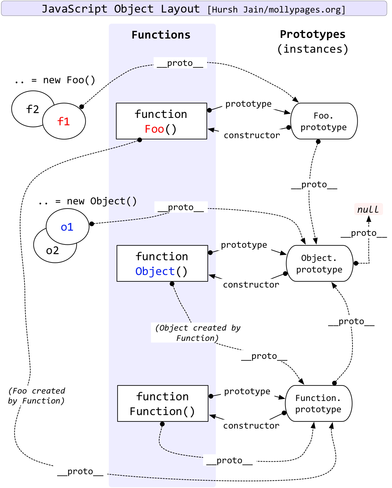

CONTENT OUTLINE
回顾一些JavaScript基本概念
– JS 白屏
– JS FOUC 原理
– async await defer
– 原型链
– 函数this指针
一、JS 白屏
白屏原因
- 在弱网络下(2G网路或者GPRS网络) ,网络延迟，JS加载延迟 ,会阻塞页面
- 客户端存在bug，缓存模块错乱，不缓存js等后来挂起的文件，以及乱缓存index.html
白屏优化实践
待补充
二、JS FOUC 原理
浏览器样式闪烁
如果使用import方法对css进行导入,会导致某些页面在Windows 下的Internet Explorer出现一些奇怪的现象：以无样式显示页面内容的瞬间闪烁
这种现象称之为文档样式短暂失效(Flash of Unstyled Content)，简称为FOUC.
原因大致为：
- 使用import方法导入样式表。
- 将样式表放在页面底部
- 有几个样式表，放在html结构的不同位置。
其实原理很清楚：
当样式表晚于结构性html 加载，当加载到此样式表时，页面将停止之前的渲染。此样
式表被下载和解析后，将重新渲染页面，也就出现了短暂的花屏现象。
解决方法：使用link标签将样式表放在文档head中
三、async await defer
3.1 async
带async关键字的函数，是声明异步函数，返回值是promise对象，如果async关键字函数返回的不是promise，会自动用Promise.resolve()包装。
1 | async function test() { |
返回值为 Promise {<resolved>: "test"}。
3.2 await
await等待右侧表达式的结果，这个结果是promise对象或者其他值。
- 如果它等到的不是一个 promise 对象，那
await表达式的运算结果就是它等到的东西。 - 如果它等到的是一个 promise 对象，await 就忙起来了，它会阻塞后面的代码，等着 promise 对象 resolve，然后得到 resolve 的值，作为
await表达式的运算结果。
1 | function test() { |
由于test()造成的阻塞，console.log('end')会等到两秒后执行
所以为了避免造成阻塞，await 必须用在 async 函数中，async 函数调用不会造成阻塞。
1 | function test() { |
先执行console.log(‘end’)，两秒后执行console.log(‘test’)
如果await用在普通函数中，会报错，如下：
3.3 async/await的执行顺序
遇到await会阻塞后面的代码，先执行async外面的同步代码，同步代码执行完，再回到async内部，继续执行await后面的代码。以下面的代码分析：
1 | async function test1() { |
执行的结果
- 首先执行宏任务，执行
test1函数，执行console.log('start test1') - 遇到
await，先执行右边test2中的console.log('test2')，中断了后面的代码，执行test1外面的同步代码 - 执行
console.log('start async') - 遇到
setTimeout，推到到下个宏任务队列中 - 执行Promise里面的同步代码
console.log('promise1') - 运行到
promise().then，发现是promise对象，推到微任务队列中 - 执行
console.log('end async') test1外面的同步代码执行结束后，回到test1中，console.log(await test2())执行完成后**返回Promise** {<resolved>: “return test2 value”}，是promise对象，推到微任务队列中- 此时第一个宏任务结束，执行所有的微任务，因为微任务队列先进先出，所以先执行
console.log('promise2')，后执行console.log('return test2 value') - 执行test2完成后，后面的代码不再阻塞，执行
console.log('end test1') - 执行下个宏任务，即执行
console.log('setTimeout')
补充下有关宏任务和微任务的知识
宏任务和微任务都是队列，宏任务有script、setTimeout、setInterval等，微任务有Promise.then catch finally、process.nextTick等，宏任务和微任务的关系如下：
3.4 async/await的优缺点
1. 优点
相对于promise，async/await处理 then 的调用链，代码要清晰很多，几乎和同步代码一样
2. 缺点
滥用 await 可能会导致性能问题，因为 await 会阻塞代码
3.5 处理reject
1. try/catch
1 | async function fn() { |
2. catch
1 | async function fn() { |
3.6 脚本加载标志 async defer
<script src="script.js"></script>没有
defer或async，浏览器会立即加载并执行指定的脚本，“立即”指的是在渲染该 script 标签之下的文档元素之前，也就是说不等待后续载入的文档元素，读到就加载并执行。<script async src="script.js"></script>有
async，加载和渲染后续文档元素的过程将和script.js的加载与执行并行进行（异步）<script defer src="myscript.js"></script>有
defer，加载后续文档元素的过程将和script.js的加载并行进行（异步），但是script.js的执行要在所有元素解析完成之后，DOMContentLoaded事件触发之前完成
然后从实用角度来说呢，首先把所有脚本都丢到 </body> 之前是最佳实践，因为对于旧浏览器来说这是唯一的优化选择，此法可保证非脚本的其他一切元素能够以最快的速度得到加载和解析。

蓝色线代表网络读取，红色线代表执行时间，这俩都是针对脚本的；绿色线代表 HTML 解析。
此图告诉我们以下几个要点：
- defer 和 async 在网络读取（下载）这块儿是一样的，都是异步的（相较于 HTML 解析）
- 差别在于脚本下载完之后何时执行，显然 defer 是最接近我们对于应用脚本加载和执行的要求的
- 关于 defer，此图未尽之处在于它是按照加载顺序执行脚本的，这一点要善加利用
- async 则是一个乱序执行的主，反正对它来说脚本的加载和执行是紧紧挨着的，所以不管你声明的顺序如何，只要它加载完了就会立刻执行
- 仔细想想，async 对于应用脚本的用处不大，因为它完全不考虑依赖（哪怕是最低级的顺序执行），不过它对于那些可以不依赖任何脚本或不被任何脚本依赖的脚本来说却是非常合适的，最典型的例子：Google Analytics
一图胜千言

四、原型链
膜拜这位简书大佬 彻底理解js的原型链
写的太牛博以至于我只能转载
由浅入深的理解原型链
在js中，大部分东西都是对象，数组是对象，函数也是对象，对象更加是对象。不管我们给数组和函数定义什么内容，它们总是有一些相同的方法和属性。比如说hasOwnProperty()，toString()等：

这说明一个对象所拥有的属性不仅仅是它本身拥有的属性，它还会从其他对象中继承一些属性。当js在一个对象中找不到需要的属性时，它会到这个对象的父对象上去找，以此类推，这就构成了对象的原型链。理解js的原型链对使用js的对象非常有帮助。
Chrome强大的控制台可以显示出每一个对象所有的属性！包括prototype、__proto__、constructor等
让我们通过一个例子由浅到深地理解原型链：
1 | function Foo(_name) { |
这是我们经常使用的创建对象的方式，将共同的方法放到Foo.prototype中，所有实例都共有这个方法了。
这是怎么实现的呢？我们看下面这张图的第一行：

原型
先只用看第一行
我们定义的show函数在Foo.prototype中，当我们执行f1.show()时，js发现f1本身没有show这个属性，所以它就到f1的原型（也就是__proto__指向的对象）去找，找到了就可以调用。
注：每个对象都有一个方法
hasOwnProperty()来检查对象本身是否有某个属性，如果有则返回true；如果这个属性在它的原型链上或原型链上都没有，则返回false；
图片第一行告诉了我们4点：
- 所有函数都有一个prototype指针，指向原型对象，如图中的Foo的prototype指针。prototype指针的意义是，当我们使用这个构造函数new出新对象的时候，新对象的原型是谁。
- 构造函数的prototype所指向的原型对象有一个constructor指针，指回构造函数。如图中Foo.prototype的constructor指针指向Foo。constructor指针有助于我们找到一个对象的构造函数是谁。
- __proto__每个对象都有，js在new一个对象的时候，会将它的__proto__指向构造函数的prototype指向的那个对象。在上图中，f1、f2这些实例对象的__proto__都指向了Foo.prototype。
- 如果一个对象的__proto__指向了另一个对象，那么前者就继承了后者的所有属性。
请注意
__proto__与prototype的区别！__proto__才是真正连接原型链的东西，而prototype只是构造函数的一个指针属性而已。
Js原生对象的继承关系
理解了这个小例子我们就可以往图片的下面看了，它展示了js原生对象的继承关系是怎么样的。
我们先看看Foo的原型吧！Foo是一个函数，它的构造函数是js内部的function Function()，Function的prototype指向了一个对象Function.prototype，因此Foo的__proto__就指向了Function.prototype，如图。
所有的函数都以function Function()为构造函数，因此，所有函数（包括function Function()和function Object()）的
__proto__都指向Function.prototype这个对象，这个对象中定义了所有函数都共有的方法，比如call()、apply()等。
我们继续深入下去，Function.prototype这个对象，它就是一个普通的对象，它的构造函数是js内置的function Object()，function Object()的prototype指向Object.prototype，因此Function.prototype.__proto__就指向Object.prototype，这个对象中定义了所有对象共有的属性，比如我们之前说的hasOwnProperty()和toString()等。
同理，Foo.prototype和其他自定义的对象也是
__proto__指向Object.prototype对象，就不需要说明了。
Object.prototype就是原型链的终点了，它的__proto__是null，js查找属性时，如果到这里还没有找到，那就是undefined了。
到这里就不难理解为什么我们说在js中，函数也是对象了，它就是继承自对象的！
由原型链到继承和对象声明
转载自JS中原型链的理解
new操作符具体干了什么呢?其实很简单，就干了三件事情。
1 | var obj = {}; |
- 第一行，我们创建了一个空对象obj
- 第二行，我们将这个空对象的__proto__成员指向了Base函数对象prototype成员对象
- 第三行，我们将Base函数对象的this指针替换成obj，然后再调用Base函数，于是我们就给obj对象赋值了一个id成员变量，这个成员变量的值是”base”，关于call函数的用法。
在谈原型链之前，我们首先要了解自定义函数与 Function 之间是什么关系，而构造函数、原型和实例之间又存在什么千丝万缕的关系呢？
其实，所有的函数都是 Function 的实例。
在构造函数上都有一个原型属性 prototype，该属性也是一个对象；那么在原型对象上有一个 constructor 属性，该属性指向的就是构造函数；而实例对象上有一个 _proto_ 属性，该属性也指向原型对象，并且该属性不是标准属性，不可以用在编程中，该属性用于浏览器内部使用。
1. 构造函数、原型和实例之间的关系
_proto_
- 在函数里有一个属性prototype
- 由该函数创建的对象默认会连接到该属性上
prototype 与 _proto_ 的关系
_proto_是站在对象角度来说的- prototype 是站在构造函数角度来说的
①+Object
②+Function+Object+Array
接下来再来讨论什么是原型链。其实，就是有限的实例对象和原型之间组成有限链，就是用来实现共享属性和继承的。下面，我们看代码：
1 | var obj = new Object(); |
1 | function Foo1(){ |
2. 继承
2.1 原型继承
1 | function Animal(name){ |
值得注意的是，这里存在两个主要的问题：
①它不方便给父级类型传递参数；
②父级类型当中的引用类型被所有的实例共享
2.2 ES5 提供了Object.create() 方法来实现继承
这种方法是ES5的新特性，其实就是复制继承。
1 | ————做兼容 |
2.3 拷贝继承
初始化 obj 时，生成相应的 __proto__；通过此函数获取继承属性
1 | var obj = {}; |
2.4 借用构造函数继承
被借用的构造函数中原型上的成员没有被借过来
1 | function Animal(name){ |
存在的问题：可以解决原型继承当中传参问题，但是父类型当中的原型对象上的成员（属性和方法）不能被继承到
2.5 组合继承
——prototype对象是有动态性的
1 | function Person(name){ |
【原型继承+借用构造函数继承】它的特点就是属性每个实例一份，方法共享
【小结】套用一句很粗暴的话，所谓原型链就是找妈的一种行为方式，就可以理解为人是人他妈生的，妖是妖他妈生的。原型链的核心其实就只有一个：属性共享和独立的控制，当你的对象实例需要独立的属性，所有做法的本质都是在对象实例里面创建属性。若不考虑太多，你大可以在Person里面直接定义你所需要独立的属性来覆盖掉原型的属性。总之，使用原型继承的时候，要对于原型中的属性要特别注意，因为他们都是牵一发而动全身的存在。现在最常用的方法是组合模式。
3. 总结
3.1 原型链
1）构造函数、原型和实例的关系
①构造函数都有一个属性prototype，这个属性是一个对象（Object的实例）
②原型对象prototype里面有一个constructor属性，该属性指向原型对象所属的构造函数
③实例对象都有一个_proto_属性，该属性也指向构造函数的原型对象，它是一个非标准属性，不可以用于编程，它是用于浏览器自己使用的
2）prototype与_proto_的关系
①prototype是构造函数的属性
②_proto_是实例对象的属性
——这两者都指向同一个对象
【总结】
i）函数也是对象，对象不一定是函数；
ii）对象的本质：无序的键值对集合；键值对当中的值可以是任意数据类型的值
iii）对象就是一个容器，这个容器当中放的是（属性和方法）
3）属性搜索
① 在访问对象的某个成员的时候会先在对象中找是否存在
② 如果当前对象中没有就在构造函数的原型对象中找
③ 如果原型对象中没有找到就到原型对象的原型上找
④ 知道Object的原型对象的原型是null为止
3.2 Function
——所有函数都是Function的实例
①本地对象：独立于宿主环境（浏览器）的对象
1 | —— 包括Object、Array、Date、RegExp、Function、Error、Number、String、Boolean |
②内置对象——包括Math、Global（window，在js中就是全局变量），使用的时候不需要new
③宿主对象——包括自定义对象、DOM、BOM
4. 回顾 new 操作符的使用过程
使用new关键字调用函数（new ClassA**(…)**）的具体步骤：
4.1 创建空对象；
1 | var obj = {}; |
4.2 设置新对象的constructor属性为构造函数的名称，设置新对象的__proto__属性指向构造函数的prototype对象；
1 | obj.__proto__ = ClassA.prototype; |
4.3 使用新对象调用函数，函数中的this被指向新实例对象：
1 | ClassA.call(obj); //{}.构造函数(); |
4.4 将初始化完毕的新对象地址，保存到等号左边的变量中
注意：若构造函数中返回this或返回值是基本类型（number、string、boolean、null、undefined）的值，则返回新实例对象；若返回值是引用类型的值，则实际返回值为这个引用类型。
1 | var foo = "bar"; |
优先级问题：
优先级由高到低：小括号(xxx) —> 属性访问. —> new foo() —-> foo()
1 | function getName(){ |
原型链相关实践应用
两道很不错的，而且讲的很完美的试题。
转载自 陌上寒
五条原型原则
- 所有的引用类型（数组，对象，函数）都具有对象特性，即可自由扩展属性（除了null以外）
- 所有的引用类型（数组，对象，函数），都有一个proto属性，属性值是一个普通的对象 （隐式原型）
- 所有的函数，都有一个prototype属性，属性值也是一个普通的对象
- 所有的引用类型（数组，对象，函数），proto属性值指向他构造函数的prototype属性值
- 当试图得到一个对象的某个属性时，如果这个对象本身没有这个属性，那么会去它的proto(即它的构造函数的prototype)中寻找
第一题
1 | function A() {} |
我们一起拆解一下
1 | //新建一个构造函数A |
求A的实例下属性a的值即new A().a
构造函数function A(){},是没有自有属性的，没有怎么办？顺着原型链查找，我们找到构造函数A的原型对象A.prototype，
因为A.prototype.a = 1;
所以console.log(new A().a);输出1
还可以这么拆解
1 | var foo = new A() |
同样的构造函数A下面找不到属性a，那就得顺着原型链查找，即foo._proto_我们知道
五条原型原则的第四条
4 所有的引用类型（数组，对象，函数），proto属性值值向他构造函数的prototype属性值
所以我们得出foo._proto_===A.prototype
因为已知条件A.prototype.a = 1;
最后在原型链上找到了属性a
看图
1 | console.log(new A().a) //1 |
如果这个理解了，那么下面的两个自然也就引刃而解
求B的实例下属性a的值即new B().a
我们知道B实例下是有属性a的，a的值等于传入的参数，因为创建B实例的时候没有传入参数所以最后输出==>undefined
注意
这里有个地方要说明一下
由于构造函数B存在属性a，但是由于没有传入参数，导致属性a的值是undefined，
后来又一次执行了 B.prototype.a = 1;，在B的原型上添加了属性a，并赋值为1，当查找属性或方法是，先查找自身，自身没有，再去原型链上的，如果在自身找到了，就会停止，
这个例子中，我们找到了a但是a的值是undefined，undefined也是值，找到了就停止，尽管原型链上还有值，js也不会继续查找下去
所以这个例子很经典，贴个图，感受一下
1 | console.log(new B().a); //undefined |
求C的实例下属性a的值即new C(2).a
如果👆两题都懂了，这个就是小case
实例化一个构造函数C并传入参数2，因为有参数，所以，构造函数C存在自有属性a，并且属性a的值为2C.prototype.a = 1;
在C的原型对象上添加一个属性a，并且赋值1
然后就出现这样的情况，自有属性和原型属性都存在，这时候取值当然就是从自有属性中取啦
来个图感受一下
所以
1 | console.log(new C(2).a); //2 |
第二题
在第二题开始之前我们很有必要先复习一下昨天的一个知识点？为什么说很有必要呢？因为这是一把🔑，它是解开这道题目的关键 instanceof
instanceof用于判断一个变量是否某个对象的实例
1 | var F = function() {}; |
F是个构造函数，而f是构造函数F的一个实例。
到instanceof发力的时候了
1 | console.log(F instanceof Object); |
所以我们得出结论
F是Object 和 Function两个的实例，执行代码
1 | console.log(F.prototype); |
看输出
即F既能访问到a，也能访问到b。
所以F.a() 输出 a() F.b() 输出 b()
继续
1 | console.log(f instanceof Object);//true |
f 并不是Function的实例，因为它本来就不是构造函数，所以就不能调用Function原型链上的相关属性和方法了，只能访问Object原型链。
所以f.a() 输出 a()， 而f.b()就报错了。
接下来，我们具体分析下，它们是如何按路径查找的：
- f.a()的查找路径: f自身: 没有 —>
f._proto_(Object.prototype): 输出a() - f.b()的查找路径: f自身: 没有 —>
f._proto_(Object.prototype): 没有 —>f._proto_._proto_(Object.prototype._proto_): 因为找不到，所以报错 - F.a()的查找路径: F自身: 没有 —>
F._proto_(Function.prototype): 没有 —>F._proto_._proto_(Object.prototype): 输出 a() - F.b()的查找路径: F自身: 没有 —>
F._proto_(Function.prototype): b()
五、函数this指针
大神写的太牛掰，我无言补充，跪拜！
核心：
函数在执行时，会在函数体内部自动生成一个this指针。谁直接调用产生这个this指针的函数，this就指向谁。
怎么理解指向呢，我认为指向就是等于。例如直接在js中输入下面的等式：
1 | console.log(this===window);//true |
情况不同，this指向的对象也不同。例如：
1. 函数声明的情况
1 | var bj=10; |
（1） 执行了add（）之后，此时的this指向的是window对象，为什么呢？因为这时候add是全局函数，是通过window直接调用的。所以下面我专门写了个window.add()就是为了说明，全局函数的this都是指向的window。
（2） 就像alert（）自带的警告弹窗一样,window.alert（）执行之后也是一样的效果。所以只要是 window点 这种调用方式都可以省略掉，因此警告弹窗可以直接使用alert（）。
2. 函数表达式
1 | var bj=10; |
（1） 执行了zjj（）之后，函数中的this也是指向window对象。原因和第一个是一样的，都是通过window这个对象直接调用。
3. 函数作为对象的属性去调用
例一
1 | var bj=10; |
（1） 当obj.say（）被执行的时候，此时的this指向的是 obj 这个对象，为什么呢？因为say函数是通过obj这个对象直接调用的。
（2） 那有人可能会问了，obj对象实际上也是通过window对象调用的，为什么this不指向window呢？我认为是因为say这个函数是通过 obj 对象直接调用的，而没有通过 window 对象直接调用，因此this不会指向window。看下面的例子就明白了。
例二
1 | var bj=10; |
（1） obj.say()执行之后，此时这个函数里的this指向的是obj对象，原因是因为say函数是通过obj直接调用的。
（2） obj.action.say()执行之后，此时这个函数里的this指向的是action对象，原因是因为say函数是通过action对象直接调用的。并没有通过obj直接调用。也没有通过 window 直接调用，所以此时action对象中say函数里的的this指向并不会是obj或者window。
例三
1 | var bj=10; |
（1） 这种情况下，say函数里的this指针还是指向的obj，原因是因为say函数是通过obj直接调用。
（2） 但是这时候wk函数中的this就是指向的是window了。为什么呢？因为 wk（）函数在 say（）函数中，是属于普通函数调用，但是并没有通过say或者obj直接调用，只是自执行，这个时候，wk就是一个全局函数，因此该函数的this指向的就是window。
（3） 那为什么this.name是显示的为空呢？因为 window 对象中本身就有一个 name 值，并不是某处添加的，如果把name换成age，得到的就是undefined了。
（4） 那怎样让wk（）函数中的this指向obj呢。一种方式就是在say函数中把say（）函数的this用变量保存起来，即 var that=this; 然后wk（）函数使用that就能达到指向obj的目的了。另外的方式是通过apply或者call来改变。
（5） 那wk（）在这里能不能写成window.wk()呢？这样是不行的，会报错，window.wk is not a function。为什么不行呢，this不是指向window吗，为什么widow对象里灭有wk（）这个函数。。这个嘛，我也不知道，先留个坑，后面再来填
例四
1 | var bj=10; |
（1） 执行了elseObj（）函数之后，为什么say函数中的this却指向了window呢？首先要理解这句话：谁直接调用产生这个this指针的函数，this就指向谁。当obj.say赋值给elseObj的时候，elseObj只是一个函数，而并没有执行，因此this指针的指向并不明确，这个时候执行到 var elseObj=obj.say的 时候，整程序相当于：
1 | var bj=10; |
这就和 第2种 函数表达式的情况一样了。所以，当执行elseObj（）的时候，this就指向window，this.obj为10，因为这时候elseObj（）是通过 window 直接调用的
（2） this.name为空是因为 window 对象中本身就有一个 name 值，并不是某处添加的，如果把name换成其它的比如age，得到的就是undefined了，因为全局并没有age属性。
例五
1 | var bj=10; |
（1） obj.say（）（）为什么会有两个括号？因为obj.say（）执行之后返回的是一个函数，并没有执行，再加一个括号就是执行返回的那个匿名函数。
（2） 如果不习惯也可以使用上面注释的那种方式，是一样的效果。
（3） 执行了函数之后，为什么返回的函数中this是指向window的呢？那是因为执行obj.say（）的时候，只是一个函数，相当于就是注释里的第一行代码，这时候返回的函数并未被执行。当再加一个括号的时候，就是执行了返回的那个函数，这个时候返回的函数就相当于是一个全局函数，是通过window直接调用，因此this就是指向的是window。
4. 工厂模式中this的指向
工厂模式可以理解为在内部完成一个新对象的构建；而构造函数模式可以理解为工厂外派员工在外去完成一个新对象的构建。
例一
1 | var bj=10; |
（1） 话说为什么叫工厂模式，我搞不太清楚，不过这个不重要，重要的是通过这个模式，在每次调用函数的时候，虽然每次都返回的是sun这个对象，但是每个对象都是不相似的，即使内容一样，比如 : (引用类型，其地址不同)
1 | var sf=fun(2,3); console.log(sf===wk); //false |
（2） 那为什么say（）函数执行之后，this是指向返回的那个对象呢？这个很明显嘛，say（）是通过wk这个对象直接调用的，而wk是fun函数返回sun对象。所以这里的this就指向的是返回的对象。所以this.bj = undefined，因为返回的对象中没有bj属性。
（3） 我认为这种模式最重要的还是 renturn sun这个返回语句，这个是必不可少的。
（4） fun(a,b)这个函数中的this指向的是window，原因是执行 var wk=fun(2,3); 的时候，fun函数已经被执行了，并且直接调用它的就是window，所以这时的this是指向的window。
例二
1 | var bj=10; |
（1） 为什么say函数中return 的函数中this是指向的window对象呢？首先，执行到 var wk=fun(2,3); 的时候，wk是一个对象。继续执行下一句代码，ss这时候是一个函数，就是通过say函数返回之后赋值的。这时候返回的函数还未执行，this指向并不明确。当执行到最后一句代码，ss（）函数执行了。这时候，ss函数就是一个全局函数，是通过window直接调用的。所以这时的this指向的是window。
（2） 如果say中返回的是一个对象，对象中又有个函数，像下面一样：
1 | sun.say=function(){ |
这时候执行到ss.say()的时候，this指向的就是ss这个对象，即通过say函数返回的那个对象。原因还是一样，say函数是通过ss直接调用的，而ss对象是wk.say()返回的对象。
5. 构造函数中this的指向
1 | var bj=10; |
（1） 要明白构造函数的this指向，我们需要明白调用构造函数经历的步骤：摘至JS高程 6.2.2节
a. 创建一个新对象。
b. 将构造函数的作用域赋给新对象（因此this就指向了这个新对象）。
c. 执行构造函数中的代码（为这个新对象添加属性）。
d. 返回新对象。
这个对new一个对象的解释，是最易懂的说法
（2） 构造函数与工厂模式相比：
a. 没有显式的创建对象。
b. 没有return语句。
c. 直接将属性和方法赋值给 this 对象。
（3） 首先，obj.say()执行之后，say函数中this的指向是obj对象，这个很明显，不再赘述。在不用new操作符的时候，Add()函数里的this指向的就是window；但是使用了new操作符之后，Add()函数中 console.log(this) 这个this为什么是obj对象，而不是window呢？
这个原因我认为在js权威指南4.6节对象创建表达式和8.2.3构造函数使用中，有所说明。使用new操作符的时候，js先创建一个新的空对象，然后，js传入指定的参数并将这个新对象当做this的值来调用一个指定的函数。这个函数可以使用this来初始化这个新创建对象的属性。所以当使用new操作符之后，函数中的this指向的是新创建的对象。所以构造函数中的this就是指向new出来的那个对象。
（5） 如果构造函数中有return语句，那么此时 var obj=new Add(); obj就是return出来的内容，但是Add函数中的this还是指向的创建的新对象Add；
6. 原型对象中this的指向
1 | var bj=10; |
（1） obj.say()()执行的时候，this指向的是window，这个还是因为obj.say()执行时返回的是一个函数，然后再加一个括号，就执行返回的这个函数，此时这个函数属于全局函数，所以，this会指向window
（2） Add()这个构造函数中的this指向的是Add{}，原因和上面构造函数中this的指向一样。
（3） Add.prototype.say=function(){ console.log(this) } 这里面的this 也是指向的是Add{}，至于原因，我认为是因为say（）这个函数是通过obj直接调用的，所以this指向的是obj，所以是Add{}。
总结：
要想判断函数中this的指向，只要知道谁直接调用产生this指针的函数，this就指向谁了。
只是要注意使用了new 操作符之后，构造函数内部的this指向的是新对象，通俗点讲就是new出来的新实例。
补充和挖坑
再来一个例子说明一下，通俗的理解一下this指针的指向：谁直接调用产生 this 指针的函数，这函数里的 this 指针就指向谁。
1 | var factory = function(){ |
（1） 这个代码首先考的是运算符的优先级 MDN运算符优先级
（2） new的优先级和 点运算符等级一样，从左至右执行，所以先执行 new factory() 然后再执行 点运算符。
（3） 执行了 new 操作之后，然后发现函数调用的优先级和成员访问运算符的优先级一样，然后遵循从左到右的执行方式。因此就先执行 成员访问运算符 .c
（4） 这时 .c 就是一个对象，然后再取 b 属性，是个函数。这个时候 this 指针已经产生， 而产生这个this指针的是b函数，而且是通过 c 调用的。因此此时 this 的指向就是 c 对象。所以最后打印出second-A
（5） 如果想要 c 里面的 b函数中 this指向的是 factory 实例。要么使用 bind.apply,call等方法来强行改变； 要么就把 b 函数写成 es6箭头函数的方式。这样 b 函数就没有this指针，而 b 函数里面的this，就是上一级的 this。
然后再来说一下 回调函数 | 立即执行函数（IIFE） | 点击事件 的 this 的指向
在这之前我们要知道：函数传参是按值传递，如果是基本数据类型，则是直接复制数据的值传过去；如果是引用类型，比如对象，函数这种，传递的就是该数据 在堆中存放的地址。
那么，回调函数就是传的 函数在堆中的地址，也就是说，回调函数中 this 的指向，决定于执行回调函数 时的执行上下文环境。
首先是 setTimeout，setInterval 这种类型的回调函数。
7. setTimeout的回调
例一
1 | setTimeout(function(){ |
（1） 这是最最常用的常见的定时器用法，回调函数里的this指向的是window。
（2） 由setTimeout()调用的代码运行在与所在函数完全分离的执行环境上。这会导致，这些代码中包含的 this 关键字在非严格模式会指向 window (或全局)对象，严格模式下为 undefined，这和所期望的this的值是不一样的。在严格模式下，setTimeout( )的回调函数里面的this仍然默认指向window对象， 并不是undefined。 这几句话是 MDN上，setTimeout中 关于 this 的问题 里对 this 指向的解释。
（3） 我的理解是：由于setTimeout属于宏任务，它的回调在延时之后才进入到主线程执行，而函数执行的时候才明确 this 的指向。执行的时候，由于没有设置内部this的指向。相当于是普通函数调用。所以会默认指向window
例二
1 | var obj = { |
（1） 第一个setTimeout，执行obj.getage 之后，相当于setTimeout的回调是一个匿名函数，执行的时候，函数内部未设置this的指向。相当于是普通函数调用。所以this默认指向window，所以结果是undefined。
（2） 第二个setTimeout，传给setTimeout的也是一个匿名回调函数，执行匿名函数，执行到 obj.getage() 的时候，getage函数里的this，指向的就是obj了，所以能打印出10。还是遵循 谁调用产生 this指针的函数，this就指向谁的规则
8. 对于 数组的遍历方法 中的this
foreach，map，filter，some，每次 callback 函数被调用的时候，this 都会指向 最后一个参数 thisArg 的这个对象。如果省略了 thisArg 参数,或者赋值为null 或 undefined，则 this 指向全局对象 。在严格模式下则是undefined（未传值的时候）。如果用箭头函数的写法，就要看当前上一层的 this 指向的是哪里了
reduce 累加器的参数中并没有 thisArg 对象可以传，但是在回调函数中，this指向的是window。如果用箭头函数的写法，就要看当前上一层的 this 指向的是哪里了
9. 点击、移入移出等类似事件的回调函数 的 this 指向
1 | <button type="button" id="btn">点我啊</button> |
console.log()会在浏览器控制台打印出信息
console.dir()可以显示一个对象的所有属性和方法
（1） 第一种调用方法，this指向的是window。虽然在function(){} 回调函数里的 this 指向的是button这个DOM对象，但是getDom是在这里面调用的，和普通函数调用没什么区别。所以也指向window
（2） 第二种都不用点击，直接触发，this指向window。因为直接当做普通函数调用了。
（3） 第三种方法，this指向 button这个DOM对象。回调函数传入的是函数执行的地址，执行的时候相当于是在window环境下执行，所以getDom的this指向的是window
（4） 第四种方式，this指向 button 这个DOM对象。
当函数被用作事件处理函数时，它的this指向触发事件的元素（一些浏览器在使用非addEventListener的函数动态添加监听函数时不遵守这个约定）。 — MDN
对于 立即执行函数 IIFE 中 this的指向，指向的是window
1 | (function(){ |
到这里，我还是没搞懂下面这种情况：
1 | var obj={ |
get函数里的this指向的是window，因为get函数 独立调用，并没有为内部 this 明确指向。所以会指向 window 。如果是严格模式，则指向undefined。
遗留问题解答一
（1）既然 this 指向的是window，为什么get函数在window上不能访问？
（2）这种在函数内部定义并执行的方式，和立即执行函数有没有区别？
（3）词法分析的时候，这个函数是被怎样处理的？
以前没搞懂为什么上面内部申明的 get（）方法不能在window上访问，其实很简单。
get函数是在say函数里面 创建的，也就是说，不管怎么调用，get函数的作用域都只能是在say函数里面。而get方法是自执行，并没有其它任何对象直接调用，所以this是指向window，但是作用域是say函数里面，却不是window。感觉和立即执行函数没区别。
不要理解成 this 指向window，产生这个this的函数就一定在window作用域上挂载。this指向 和 函数作用域 并不是相互的
由于js是采用的静态作用域（也叫词法作用域），这就意味着函数的执行依赖于函数定义的时候所产生（而不是函数调用的时候产生的）的变量作用域。
所以，函数的作用域是基于函数创建（可以理解为函数定义的时候）的地方，也就是函数在哪里创建，不管是否返回这个函数，或者返回带括号（已执行）的函数，都不用在意，只要知道是在哪里定义即创建的就知道函数的作用域是什么内容了。
在全局作用域中“定义”一个函数的时候，只会创建包含全局作用域的作用域链。只有“执行”该函数的时候，才会复制创建时的作用域，并将当前函数的局部作用域放在作用域链的顶端。
去取变量值的时候，首先看本函数里有没有该值，如果没有再到函数定义的外部去找
遗留问题解答二
如果使用了严格模式，this的指向则是它进入执行环境时的值。不一定是undefined。
1 | ; |
如果未指定this，则是undefined
1 | ; |